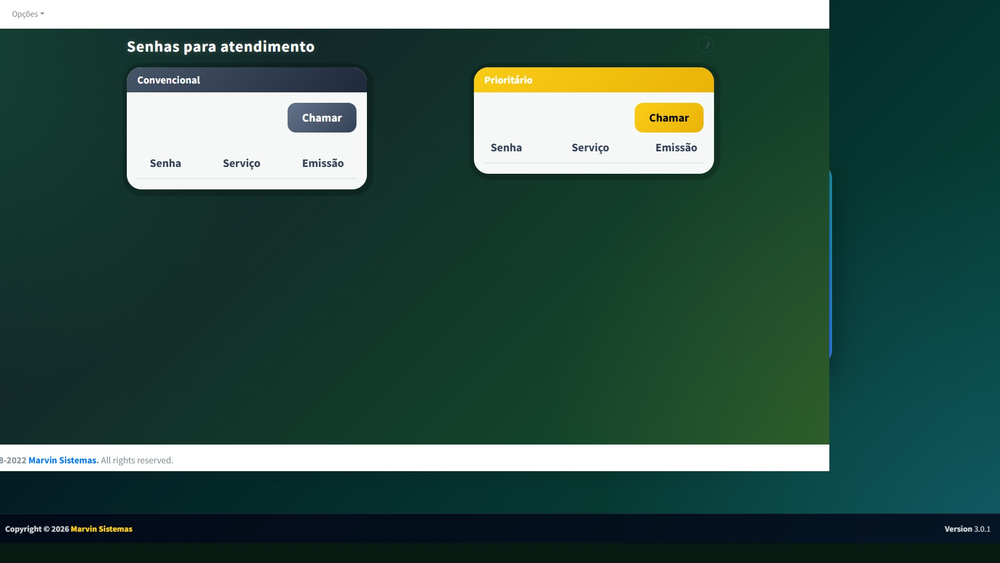
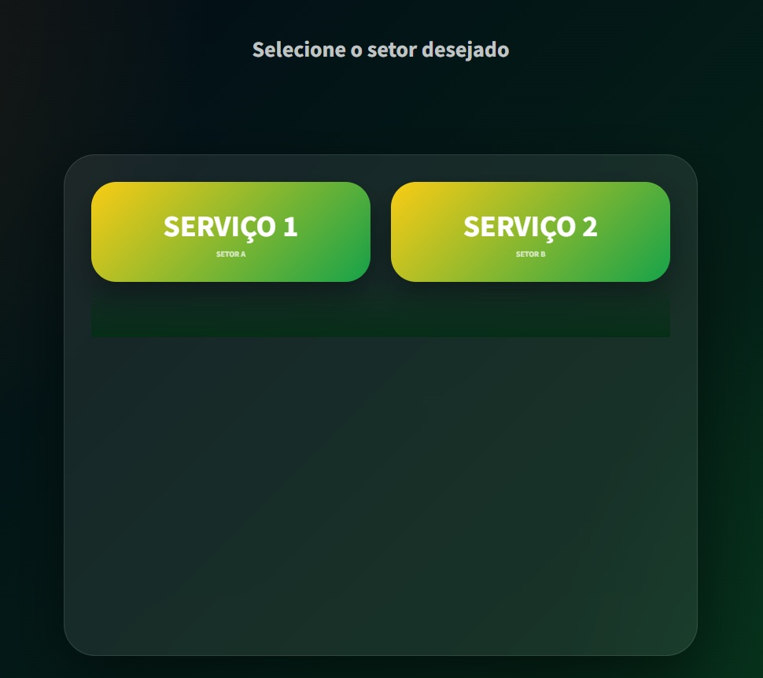
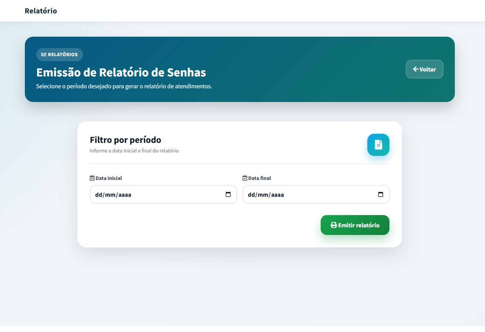
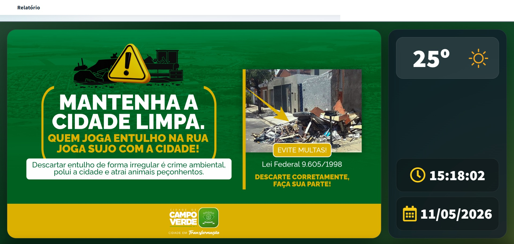

Sistema completo para emissão, chamada e gerenciamento de senhas, com módulos para televisão, guichês, relatórios e atendimento em tempo real.
Organização, agilidade e controle para ambientes de atendimento ao público.
O Painel de Senhas foi desenvolvido para organizar filas e melhorar o fluxo de atendimento em órgãos públicos, clínicas, secretarias, recepções e demais ambientes com grande movimentação de pessoas.
A solução permite emitir senhas, chamar atendimentos por guichê, separados por setor e exibir as chamadas em televisões com voz realista e natural também possui relatórios por período.
O sistema conta com integração com api externa de noticiário para exibição do letreiro, tem uma api interna para gestão das mídias de divulgação
Tudo com uma interface moderna, simples de operar e pensada para o uso diário.
Prefeituras
Secretarias municipais
Unidades de saúde
Recepções públicas
Clínicas e empresas
Exibição das senhas chamadas em tela grande, com visual moderno e informativo.
Geração de senhas por tipo de serviço, setor ou prioridade.
Consulta de atendimentos realizados por período, guichê ou categoria.




Veja uma demonstração rápida do funcionamento do sistema.
Entre em contato para solicitar uma demonstração ou adaptar o sistema para sua realidade.